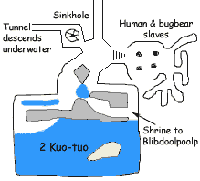
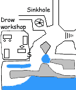

 Edwin sent an Arcane Eye to examine the area: there were a total of twelve human and twelve bugbear captives carving roughly square blocks of limestone from the cavern walls. A number of Skum were charged with piling the stone debris, while four larger Skum with whips provided motivation for the rest to keep working. Occasionally a team of Skum would drag blocks of stone from the quarry across the hall to a large sinkhole, where they were simply dumped down the hole. Gouges in the sides of the sinkhole indicate this had been going on for some time. It was unclear why such effort was expended in squaring off the blocks of stone when they were being so roughly treated, but the party found this minor mystery unimportant.
Continuing on, a series of tunnels led to a crude shrine, complete with a statue of a female humanoid with a lobster head and claws. Edwin identified this as Blibdoolpoolp, goddess of the Kuo-toa. Deeper in the chamber was a room dominated by a large pool of water. On an island in the center of the pool rested two humanoids with fish-like features, presumably Kuo-Toa though Edwin was not sure. Lastly the Eye was sent down the hall leading away from the sinkhole, which gradually descended until finally submerging completely. The hall continued underwater a long distance, until the Eye winked out of existence.
It's Blibdroolinthepool, actually, and we believe she faded from existence when the last of her Kuo-toa worshippers died out. As with many such beings, she probably did not perish so much as simply degenerate into a vestige, a remnant or echo of her prior self without form or power to affect the world around her. Most such beings are driven insane by this powerlessness, such that even if somehow contacted they are unable to function. Blibdroolinthepool might fare better in that respect: even as a goddess she was completely bonkers.
Choice Quotes
The Narrator
Edwin unwisely attempted to calm the slaves. Rolling a 3 on Diplomacy, Edwin reassured the remaining captives that he would not hurt them because, "I only have two Fireballs left." The human and bugbear slaves retreated even further into the far tunnels. Fortunately Katriana had put far more ranks into Diplomacy, soon calming and coaxing the slaves out into the open. "I'm hungry," said one young boy, and Katriana gave each captive one of the Goodberries she had been stockpiling for the last few weeks.
All of the captives, human and bugbear alike, had similar stories to tell: they had been captured in raids by Orcs or Drow and sold into slavery, eventually being sold to the Fish-men. None of the captives wanted to be freed, seeming to fear the very thought of leaving the quarry chamber. Edwin believed they were under the influence of a mind-affecting spell. The captives said that sometimes a really big fish with tentacles would come and take slaves away, but could not describe it in any more detail than that. The party was unable to discern what sort of creature that might be. [Editor's note: Knowledge (Dungeoneering) of 22 was insufficient given the hefty circumstance penalty of such a vague description.]

The party determined to free the captives by confronting the Kuo-Toa. Grapthar cast Detect Evil, discovering a moderate evil in the location where Edwin had seen the two Kuo-toa as well as a faint evil in one of the small pools in the chamber. Strangely, the spell located another source of evil of moderate strength seemingly embedded in stone. Examining the closest wall, Katriana found a secret door. Chaden found no traps on it, and Grapthar opened it. The room beyond was filled with steam and acrid smoke. The murmur of simmering pots could faintly be heard, while wafts of strange chemicals drifted through the portal.
An old man sat in a chair, his chin propped upon the stump of his hand. His skin was a midnight blue, his hair a pale white. He was a drow elf, and was staring intently at the liquid in a beaker. The beaker boiled over the moment the door opened, annoying the drow. "Close the door, you're letting in a draft." said the old man. Grapthar asked if the party could come in first, to which the old man responded with a wave of the stump of his right hand.
The Drow, like the humans and bugbears excavating rock, was a slave of the Fish-men. The Kuo-toa had amputated his hand to prevent him casting spells, and put him to work making jars of a pasty substance (two of which the party had recovered from the previous group of Skum). He did not know what the alchemical substance actually did, he simply followed the instructions he had been given. The Kuo-Toa had given him no orders regarding intruders, and he indicated the party could take as many jars as they wished.
Choice Quotes
Sense Motive checks
The Ass-Whooping
The party determined to free all of the slaves by killing the Kuo-toa spotted by Edwin's Arcane Eye. Buffing up with spells they charged around the corner onto the dry strip of land next to the pool, save for Sabrina who had no ranged attack. The two Kuo-toa were no longer on the island.
Suddenly eleven Kuo-toa erupted from the water. Grasping hands, they immediately loosed a Lightning Bolt which struck Katriana, Edwin, and Grapthar for 20 points of damage (10 with Reflex saves). Katriana responded in kind, an Arc of Lightning which should have engulfed most of the foes, but it fizzled out just before reaching them. Chaden launched an arrow from her magic bow, scoring a natural 20, but it deflected before reaching its target. Then the Kuo-toa launched a second Lightning Bolt, striking Edwin, Grapthar, and Chaden.
Taking this as a hint, Edwin cast Greater Dimension Door to retreat from the scene.